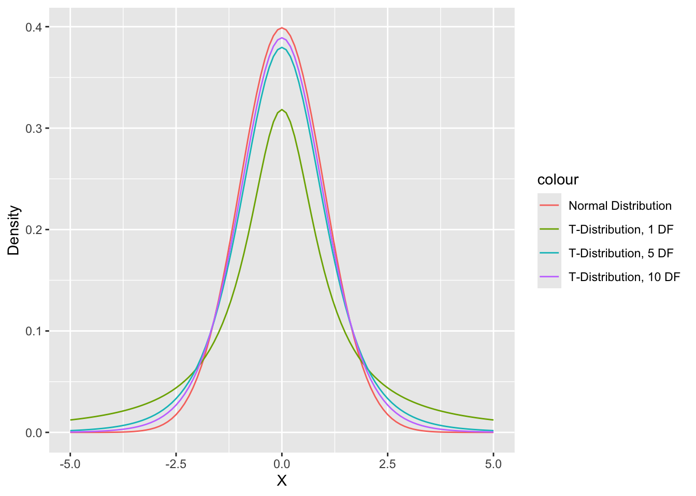
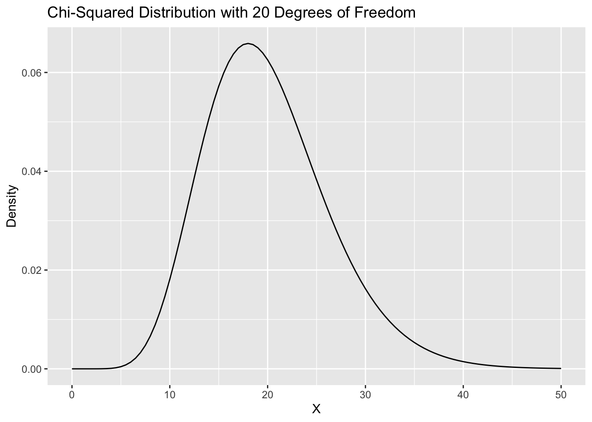

Section 7. Tables, Chi-Squared Tests, and Correlations
Preliminary Data Cleaning
First, we want to read in our data from the Cooperative Election Study conducted in 2020. We select the three variables we will use for our analyses (ideo5, pid3, and commonweight). Next, we use the mutate() function to give our ideology and party variables comprehensible labels.
ces <- read_csv("ces2020_example.csv")
ces <- ces %>%
select(ideo5, pid3, commonweight) %>%
mutate(ideology = factor(ideo5,
labels = c("Very liberal",
"Liberal",
"Moderate",
"Conservative",
"Very Conservative",
"Not Sure")),
party = factor(pid3,
labels = c("Democrat",
"Republican",
"Independent",
"Other",
"Not Sure")))Review
Review of Hypothesis Testing
We usually start with our hypothesis, which is known as the alternative hypothesis, that some statistic is not equal to 0 or is greater than or less than 0. Implicit in this hypothesis is what is known as the null hypothesis: that the statistic we are interested in is equal to 0.
There are two main types of alternative hypotheses: two-sided and one-sided. Two-sided hypotheses are of the form: \(A\not=B\).
For example:
- \(H_0\): The difference between the means for group A and group B is 0.
- \(H_A\): The difference between the means for group A and group B is not 0.
One-sided hypotheses are of the form: \(A>B\) or \(A<B\).
For example:
- \(H_0\): The difference between the means for group A and group B is 0.
- \(H_A\): The mean for group A is greater than the mean for group B.
Review of t-tests
Under the Central Limit Theorem, the statistic \(Z = \frac{\bar{X}-\mu}{\sigma/\sqrt{n}}\) is distributed approximately standard normal as the sample size increases.
This allows us to conduct a test of the null hypothesis (as discussed above), under the assumption that the null hypothesis is true. If our null hypothesis is true, the statistic \(Z = \frac{\bar{X} - \mu_0}{\sigma/\sqrt{n}}\), where \(\mu_0\) is the population value under the null hypothesis, will be distributed approximately standard normal with larger sample sizes.
We can calculate this statistic using our observed data, and as a result of the Central Limit Theorem, we can calculate the probability that we observe a value of this statistic at least as large in magnitude as the one we actually observe if the null hypothesis is true.
This probability of observing a value at least as large as that actually observed if the null hypothesis is true is known as the p-value.
The t-distribution
Because we have small sample sizes and usually don’t know the true value of \(\sigma\), we usually use the t-distribution instead of the normal distribution.
The t-distribution is more conservative than the normal distribution (there is more probability in the tails of the distribution, so it is less likely we reject the null hypothesis using the t-distribution). This helps us account for the uncertainty from the small sample sizes and our estimation of the standard deviation.

Weighted t-tests
One of the things that is important to remember is that we have to apply survey weights when we are analyzing survey data. Applying the weights will ensure that our survey samples (which may not be representative of the population) will be representative of the population.
To apply weights when we are conducting t-tests, we should use the weights package in R.
install.packages("weights")library(weights)
dem.sub <- ces%>% filter(party=="Democrat"&ideo5!=6)
rep.sub <- ces %>% filter(party=="Republican"&ideo5!=6)
wtd.t.test(x = dem.sub$ideo5,
y = rep.sub$ideo5,
weight = dem.sub$commonweight,
weighty = rep.sub$commonweight,
samedata = FALSE,
alternative = "two.sided")$test
[1] "Two Sample Weighted T-Test (Welch)"
$coefficients
t.value df p.value
-28.88007 583.43253 0.00000
$additional
Difference Mean.x Mean.y Std. Err
-2.09809561 2.14947769 4.24757330 0.07264856 Tables in R
We talked a bit about tables earlier in the semester. Tables are very helpful for summarizing categorical data. We can get the number of observations that fall into a given category or the proportion of observations that fall into each category.
Tables: table() and prop.table()
We can calculate basic tables in R using the table() function, as we saw a while ago. For example, if we want to discover the number of respondents in each ideological category in each party group, we can use the table() function.
table(ces$party, ces$ideology)
Very liberal Liberal Moderate Conservative Very Conservative
Democrat 105 136 105 18 6
Republican 1 4 48 96 96
Independent 16 32 145 47 19
Other 13 4 17 5 6
Not Sure 3 3 13 3 2
Not Sure
Democrat 12
Republican 9
Independent 7
Other 1
Not Sure 27We can also calculate the proportion of respondents in each category using the prop.table() function.
prop.table(table(ces$party, ces$ideology))
Very liberal Liberal Moderate Conservative
Democrat 0.105105105 0.136136136 0.105105105 0.018018018
Republican 0.001001001 0.004004004 0.048048048 0.096096096
Independent 0.016016016 0.032032032 0.145145145 0.047047047
Other 0.013013013 0.004004004 0.017017017 0.005005005
Not Sure 0.003003003 0.003003003 0.013013013 0.003003003
Very Conservative Not Sure
Democrat 0.006006006 0.012012012
Republican 0.096096096 0.009009009
Independent 0.019019019 0.007007007
Other 0.006006006 0.001001001
Not Sure 0.002002002 0.027027027Remember, we can round these numbers too.
prop.table(table(ces$party, ces$ideology)) %>%
round(digits = 3)
Very liberal Liberal Moderate Conservative Very Conservative
Democrat 0.105 0.136 0.105 0.018 0.006
Republican 0.001 0.004 0.048 0.096 0.096
Independent 0.016 0.032 0.145 0.047 0.019
Other 0.013 0.004 0.017 0.005 0.006
Not Sure 0.003 0.003 0.013 0.003 0.002
Not Sure
Democrat 0.012
Republican 0.009
Independent 0.007
Other 0.001
Not Sure 0.027CrossTable()
There are a variety of packages that can be used to create nicer looking tables. One of these packages is gmodels. Within gmodels, there is a function called CrossTable() which can generate aesthetically pleasing cross tables.
install.packages("gmodels")library(gmodels)
CrossTable(ces$ideology,
ces$party,
digits = 3,
prop.chisq = FALSE)
Cell Contents
|-------------------------|
| N |
| N / Row Total |
| N / Col Total |
| N / Table Total |
|-------------------------|
Total Observations in Table: 999
| ces$party
ces$ideology | Democrat | Republican | Independent | Other | Not Sure | Row Total |
------------------|-------------|-------------|-------------|-------------|-------------|-------------|
Very liberal | 105 | 1 | 16 | 13 | 3 | 138 |
| 0.761 | 0.007 | 0.116 | 0.094 | 0.022 | 0.138 |
| 0.275 | 0.004 | 0.060 | 0.283 | 0.059 | |
| 0.105 | 0.001 | 0.016 | 0.013 | 0.003 | |
------------------|-------------|-------------|-------------|-------------|-------------|-------------|
Liberal | 136 | 4 | 32 | 4 | 3 | 179 |
| 0.760 | 0.022 | 0.179 | 0.022 | 0.017 | 0.179 |
| 0.356 | 0.016 | 0.120 | 0.087 | 0.059 | |
| 0.136 | 0.004 | 0.032 | 0.004 | 0.003 | |
------------------|-------------|-------------|-------------|-------------|-------------|-------------|
Moderate | 105 | 48 | 145 | 17 | 13 | 328 |
| 0.320 | 0.146 | 0.442 | 0.052 | 0.040 | 0.328 |
| 0.275 | 0.189 | 0.545 | 0.370 | 0.255 | |
| 0.105 | 0.048 | 0.145 | 0.017 | 0.013 | |
------------------|-------------|-------------|-------------|-------------|-------------|-------------|
Conservative | 18 | 96 | 47 | 5 | 3 | 169 |
| 0.107 | 0.568 | 0.278 | 0.030 | 0.018 | 0.169 |
| 0.047 | 0.378 | 0.177 | 0.109 | 0.059 | |
| 0.018 | 0.096 | 0.047 | 0.005 | 0.003 | |
------------------|-------------|-------------|-------------|-------------|-------------|-------------|
Very Conservative | 6 | 96 | 19 | 6 | 2 | 129 |
| 0.047 | 0.744 | 0.147 | 0.047 | 0.016 | 0.129 |
| 0.016 | 0.378 | 0.071 | 0.130 | 0.039 | |
| 0.006 | 0.096 | 0.019 | 0.006 | 0.002 | |
------------------|-------------|-------------|-------------|-------------|-------------|-------------|
Not Sure | 12 | 9 | 7 | 1 | 27 | 56 |
| 0.214 | 0.161 | 0.125 | 0.018 | 0.482 | 0.056 |
| 0.031 | 0.035 | 0.026 | 0.022 | 0.529 | |
| 0.012 | 0.009 | 0.007 | 0.001 | 0.027 | |
------------------|-------------|-------------|-------------|-------------|-------------|-------------|
Column Total | 382 | 254 | 266 | 46 | 51 | 999 |
| 0.382 | 0.254 | 0.266 | 0.046 | 0.051 | |
------------------|-------------|-------------|-------------|-------------|-------------|-------------|
If we also want to perform a Chi-Squared test of independence, we can do so using the chisq argument:
CrossTable(ces$ideology,
ces$party,
digits = 3,
prop.chisq = FALSE,
chisq = TRUE)Warning in chisq.test(t, correct = FALSE, ...): Chi-squared approximation may
be incorrect
Cell Contents
|-------------------------|
| N |
| N / Row Total |
| N / Col Total |
| N / Table Total |
|-------------------------|
Total Observations in Table: 999
| ces$party
ces$ideology | Democrat | Republican | Independent | Other | Not Sure | Row Total |
------------------|-------------|-------------|-------------|-------------|-------------|-------------|
Very liberal | 105 | 1 | 16 | 13 | 3 | 138 |
| 0.761 | 0.007 | 0.116 | 0.094 | 0.022 | 0.138 |
| 0.275 | 0.004 | 0.060 | 0.283 | 0.059 | |
| 0.105 | 0.001 | 0.016 | 0.013 | 0.003 | |
------------------|-------------|-------------|-------------|-------------|-------------|-------------|
Liberal | 136 | 4 | 32 | 4 | 3 | 179 |
| 0.760 | 0.022 | 0.179 | 0.022 | 0.017 | 0.179 |
| 0.356 | 0.016 | 0.120 | 0.087 | 0.059 | |
| 0.136 | 0.004 | 0.032 | 0.004 | 0.003 | |
------------------|-------------|-------------|-------------|-------------|-------------|-------------|
Moderate | 105 | 48 | 145 | 17 | 13 | 328 |
| 0.320 | 0.146 | 0.442 | 0.052 | 0.040 | 0.328 |
| 0.275 | 0.189 | 0.545 | 0.370 | 0.255 | |
| 0.105 | 0.048 | 0.145 | 0.017 | 0.013 | |
------------------|-------------|-------------|-------------|-------------|-------------|-------------|
Conservative | 18 | 96 | 47 | 5 | 3 | 169 |
| 0.107 | 0.568 | 0.278 | 0.030 | 0.018 | 0.169 |
| 0.047 | 0.378 | 0.177 | 0.109 | 0.059 | |
| 0.018 | 0.096 | 0.047 | 0.005 | 0.003 | |
------------------|-------------|-------------|-------------|-------------|-------------|-------------|
Very Conservative | 6 | 96 | 19 | 6 | 2 | 129 |
| 0.047 | 0.744 | 0.147 | 0.047 | 0.016 | 0.129 |
| 0.016 | 0.378 | 0.071 | 0.130 | 0.039 | |
| 0.006 | 0.096 | 0.019 | 0.006 | 0.002 | |
------------------|-------------|-------------|-------------|-------------|-------------|-------------|
Not Sure | 12 | 9 | 7 | 1 | 27 | 56 |
| 0.214 | 0.161 | 0.125 | 0.018 | 0.482 | 0.056 |
| 0.031 | 0.035 | 0.026 | 0.022 | 0.529 | |
| 0.012 | 0.009 | 0.007 | 0.001 | 0.027 | |
------------------|-------------|-------------|-------------|-------------|-------------|-------------|
Column Total | 382 | 254 | 266 | 46 | 51 | 999 |
| 0.382 | 0.254 | 0.266 | 0.046 | 0.051 | |
------------------|-------------|-------------|-------------|-------------|-------------|-------------|
Statistics for All Table Factors
Pearson's Chi-squared test
------------------------------------------------------------
Chi^2 = 768.1034 d.f. = 20 p = 8.288596e-150
The CrossTable() function also allows us to see what the “expected” values in each cell are under the null hypothesis if we use the expected argument.
CrossTable(ces$ideology,
ces$party,
digits = 3,
prop.chisq = FALSE,
chisq = TRUE,
expected = TRUE)Warning in chisq.test(t, correct = FALSE, ...): Chi-squared approximation may
be incorrect
Cell Contents
|-------------------------|
| N |
| Expected N |
| N / Row Total |
| N / Col Total |
| N / Table Total |
|-------------------------|
Total Observations in Table: 999
| ces$party
ces$ideology | Democrat | Republican | Independent | Other | Not Sure | Row Total |
------------------|-------------|-------------|-------------|-------------|-------------|-------------|
Very liberal | 105 | 1 | 16 | 13 | 3 | 138 |
| 52.769 | 35.087 | 36.745 | 6.354 | 7.045 | |
| 0.761 | 0.007 | 0.116 | 0.094 | 0.022 | 0.138 |
| 0.275 | 0.004 | 0.060 | 0.283 | 0.059 | |
| 0.105 | 0.001 | 0.016 | 0.013 | 0.003 | |
------------------|-------------|-------------|-------------|-------------|-------------|-------------|
Liberal | 136 | 4 | 32 | 4 | 3 | 179 |
| 68.446 | 45.512 | 47.662 | 8.242 | 9.138 | |
| 0.760 | 0.022 | 0.179 | 0.022 | 0.017 | 0.179 |
| 0.356 | 0.016 | 0.120 | 0.087 | 0.059 | |
| 0.136 | 0.004 | 0.032 | 0.004 | 0.003 | |
------------------|-------------|-------------|-------------|-------------|-------------|-------------|
Moderate | 105 | 48 | 145 | 17 | 13 | 328 |
| 125.421 | 83.395 | 87.335 | 15.103 | 16.745 | |
| 0.320 | 0.146 | 0.442 | 0.052 | 0.040 | 0.328 |
| 0.275 | 0.189 | 0.545 | 0.370 | 0.255 | |
| 0.105 | 0.048 | 0.145 | 0.017 | 0.013 | |
------------------|-------------|-------------|-------------|-------------|-------------|-------------|
Conservative | 18 | 96 | 47 | 5 | 3 | 169 |
| 64.623 | 42.969 | 44.999 | 7.782 | 8.628 | |
| 0.107 | 0.568 | 0.278 | 0.030 | 0.018 | 0.169 |
| 0.047 | 0.378 | 0.177 | 0.109 | 0.059 | |
| 0.018 | 0.096 | 0.047 | 0.005 | 0.003 | |
------------------|-------------|-------------|-------------|-------------|-------------|-------------|
Very Conservative | 6 | 96 | 19 | 6 | 2 | 129 |
| 49.327 | 32.799 | 34.348 | 5.940 | 6.586 | |
| 0.047 | 0.744 | 0.147 | 0.047 | 0.016 | 0.129 |
| 0.016 | 0.378 | 0.071 | 0.130 | 0.039 | |
| 0.006 | 0.096 | 0.019 | 0.006 | 0.002 | |
------------------|-------------|-------------|-------------|-------------|-------------|-------------|
Not Sure | 12 | 9 | 7 | 1 | 27 | 56 |
| 21.413 | 14.238 | 14.911 | 2.579 | 2.859 | |
| 0.214 | 0.161 | 0.125 | 0.018 | 0.482 | 0.056 |
| 0.031 | 0.035 | 0.026 | 0.022 | 0.529 | |
| 0.012 | 0.009 | 0.007 | 0.001 | 0.027 | |
------------------|-------------|-------------|-------------|-------------|-------------|-------------|
Column Total | 382 | 254 | 266 | 46 | 51 | 999 |
| 0.382 | 0.254 | 0.266 | 0.046 | 0.051 | |
------------------|-------------|-------------|-------------|-------------|-------------|-------------|
Statistics for All Table Factors
Pearson's Chi-squared test
------------------------------------------------------------
Chi^2 = 768.1034 d.f. = 20 p = 8.288596e-150
Chi-Squared Tests
We test the null hypothesis that our categorical variables are independent using the Chi-Squared test statistic and the Chi-Squared distribution.
As a reminder, the Chi-Squared test statistic is \(\chi^2 = \sum_{k=1}^K \frac{(Observed_k - Expected_k)^2}{Expected_k}\) where \(k\) indicates a given cell. The expected value in a given cell under the null hypothesis is the row total times the column total divided by the total number of observations.
Finally, under the null hypothesis, our \(\chi^2\) statistic will be distributed according to the \(\chi^2\) distribution with \(g\) degrees of freedom. \(g\) is calculated by multiplying the number of rows minus 1 by the number of columns minus 1. Above, the degrees of freedom will be 20, leading to a Chi-Squared distribution that looks like this:

Unweighted Chi-Squared Test
If we just want to conduct a Chi-Squared test, we can do so using the chisq.test() function.
chisq.test(ces$ideology,
ces$party)Warning in chisq.test(ces$ideology, ces$party): Chi-squared approximation may
be incorrect
Pearson's Chi-squared test
data: ces$ideology and ces$party
X-squared = 768.1, df = 20, p-value < 2.2e-16The Problem: the chisq.test() function does not apply survey weights.
Weighted Chi-Squared Test
If we want to conduct a weighted Chi-Squared test (which we should if our dataset contains weights), we should turn to the weights package. In the weights package, there is a wtd.chi.sq() function which allows us to easily apply weights.
library(weights)wtd.chi.sq(var1 = ces$ideology,
var2 = ces$party,
weight = ces$commonweight) Chisq df p.value
9.902687e+02 2.000000e+01 4.640567e-197 Counting numbers in groups: count()
Another way to obtain a table is using the count() function in dplyr. One of the nice things about the count function is that it allows us to obtain the weighted number of observations in each category using the wt argument.
ces %>%
count(ideology, wt = commonweight)# A tibble: 7 × 2
ideology n
<fct> <dbl>
1 Very liberal 105.
2 Liberal 136.
3 Moderate 266.
4 Conservative 176.
5 Very Conservative 170.
6 Not Sure 67.0
7 <NA> 0.970To see how important weights are, we can compare to the unweighted counts:
ces %>%
count(ideology)# A tibble: 7 × 2
ideology n
<fct> <int>
1 Very liberal 138
2 Liberal 179
3 Moderate 328
4 Conservative 169
5 Very Conservative 129
6 Not Sure 56
7 <NA> 1gt
Finally, there are many packages in R that can be used to generate nice tables. The one we’ll talk about is gt.
install.packages("gt")library(gt)
ces %>%
group_by(party) %>%
count(ideology, wt = commonweight) %>%
gt(groupname_col = "pid3") %>%
opt_row_striping(row_striping = T)| party | ideology | n |
|---|---|---|
| Democrat | Very liberal | 86.1513497 |
| Democrat | Liberal | 103.8848878 |
| Democrat | Moderate | 79.9934793 |
| Democrat | Conservative | 14.8124399 |
| Democrat | Very Conservative | 6.7042232 |
| Democrat | Not Sure | 9.3306875 |
| Republican | Very liberal | 0.3514461 |
| Republican | Liberal | 7.2793520 |
| Republican | Moderate | 41.8180993 |
| Republican | Conservative | 104.4875094 |
| Republican | Very Conservative | 126.9780632 |
| Republican | Not Sure | 7.1685850 |
| Independent | Very liberal | 9.2598282 |
| Independent | Liberal | 21.3422818 |
| Independent | Moderate | 116.5471971 |
| Independent | Conservative | 45.6921294 |
| Independent | Very Conservative | 25.8717080 |
| Independent | Not Sure | 4.2594498 |
| Independent | NA | 0.9702168 |
| Other | Very liberal | 7.5267886 |
| Other | Liberal | 2.1869923 |
| Other | Moderate | 16.1317720 |
| Other | Conservative | 6.0002626 |
| Other | Very Conservative | 7.2110614 |
| Other | Not Sure | 0.4421898 |
| Not Sure | Very liberal | 2.1532383 |
| Not Sure | Liberal | 1.5623802 |
| Not Sure | Moderate | 11.7003928 |
| Not Sure | Conservative | 5.1063630 |
| Not Sure | Very Conservative | 3.2099986 |
| Not Sure | Not Sure | 45.8422459 |
Correlation Coefficients
Turning back to our dataset of House election results and campaign finance data from 2020, we can think about how we might summarize the relationship between two numeric variables.
We generally use what is known as the correlation coefficient to summarize bivariate relationships between two numeric variables.
The correlation coefficient is calculated as follows:
\(\frac{Cov(X, Y)}{\sqrt{Var(X)*Var(Y)}} = \frac{\sum_{i=1}^{n}(X_i - \bar{X})*(Y_i - \bar{Y})}{\sqrt{\sum_{i = 1}^{n} (X_i - \bar{X})^2 * \sum_{i=1}^n(Y_i - \bar{Y})^2}}\)
You can think of this as roughly the share of the variation in the two variables that is captured by the co-variation in the two variables.
Correlation coefficients run from -1 to 1, where -1 is a perfect negative relationship and 1 is a perfect positive relationship. 0 indicates that there is no relationship between the variables.
Note: a positive relationship means that, as X increases, Y tends to increase as well. A negative relationship means that, as X increases, Y tends to decrease.
We can easily calculate the correlation in R using the cor() function.
cor(log(house$disbursements), house$voteshare)[1] 0.4844947We can see this is the same as if we actually calculated the correlation coefficient by hand:
cov(log(house$disbursements), house$voteshare)/
sqrt(var(log(house$disbursements))*var(house$voteshare))[1] 0.4844947To conduct an actual hypothesis test, we need to use the cor.test() function.
cor.test(log(house$disbursements), house$voteshare)
Pearson's product-moment correlation
data: log(house$disbursements) and house$voteshare
t = 14.902, df = 724, p-value < 2.2e-16
alternative hypothesis: true correlation is not equal to 0
95 percent confidence interval:
0.4267770 0.5382815
sample estimates:
cor
0.4844947 This is just a t-test where the t-statistic is calculated as follows:
r <- cor(log(house$disbursements), house$voteshare)
(r - 0)/(sqrt((1-r^2)/(nrow(house)-2)))[1] 14.90227We can confirm that the t-statistic we calculated by hand matches the t-statistic from the cor.test() function.
Weighted Correlation Coefficients
If we are working with survey data or data with observation weights, we want to apply those weights in calculating the correlation coefficient.
We can do this using the weights package and the wtd.cor() function.
library(weights)
wtd.cor(x = var1,
y = var2,
weight = weight)